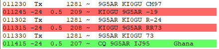

2021 was an interesting year. What was your best DX?_______________________________________________I worked a ton of new entities on Digital (FT8) for the first time, but I think my bestDX was SV2RSG/A Mount Athos on 20 FT8 and 40 FT8.During this year, I also worked EP2LSH, SU1SK, YI3WHR, JY4IB and ST2NH on FT8 for new digital entities. Oh and XW0LP on 80 meters for a minor miracle. I think he was QRP.C92RU on 80 meters FT8 and A25RU on 80 CW were also quite memorable. There was ZC4GR on 15 meters FT8, 3A/MM0NDX on 40 SSB and 3A/G4PVM on 20 CW were highlights as well.What was your best DX of 2021?Paul N6PSE
Chat mailing list
Chat@ncdxc.org
http://mail.ncdxc.org/mailman/listinfo/chat_ncdxc.org